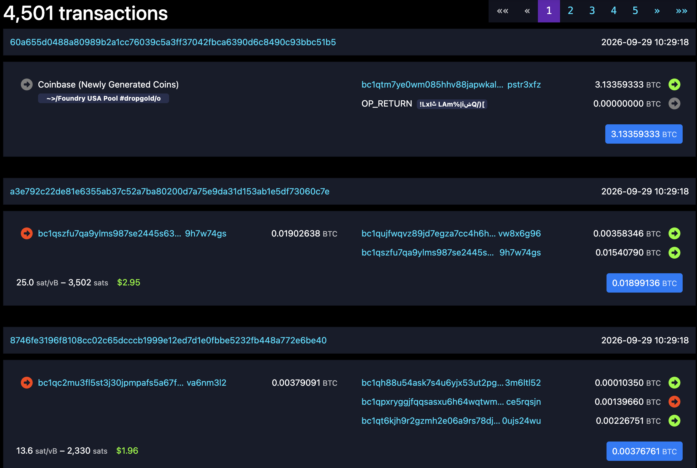
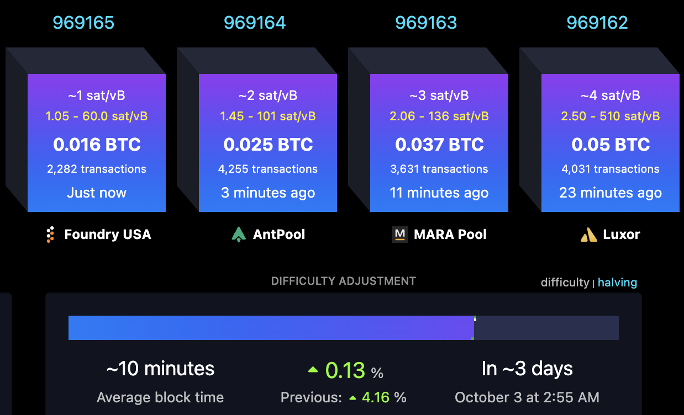
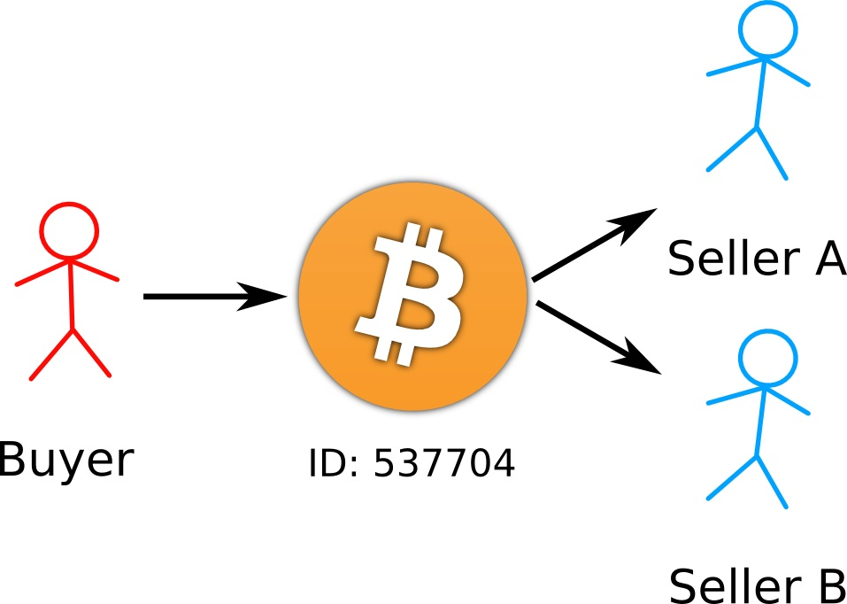
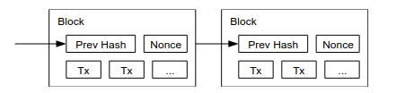
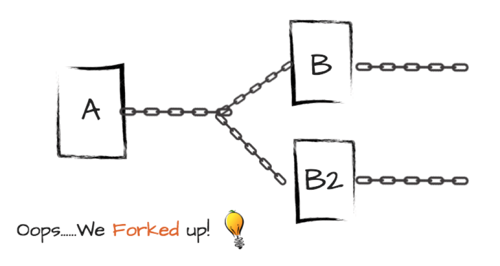
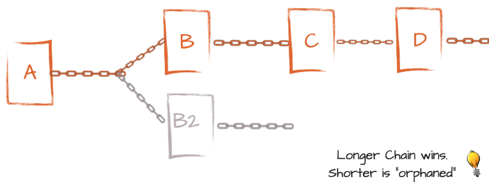
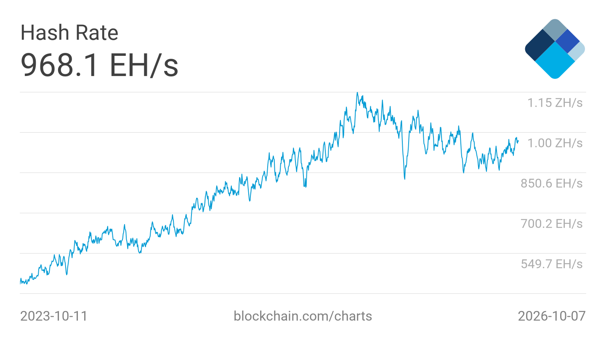

print(.49 ** (6 * 3))2.6517308458596524e-06By the end of today’s lecture, you will learn:
Bitcoin is a decentralized digital currency that does not require a trusted banking authority to manage everybody’s transactions and bank balances. Instead, everyone on the Internet that uses the Bitcoin software collectively keeps track of how many Bitcoins each party holds at any moment in time.
There are three types of data structures to consider within Bitcoin.
A transaction is a transfer of coins from one or more senders (who digitally sign the transaction) to one or more receivers
A block is a group of a few thousand transactions created within ~10 minutes

The blockchain is a linked list of blocks, where every block references the hash of the previous block in the chain (except for the first block, called the genesis block)

A blockchain is a public ledger that records every financial transaction ever made. It is:
There are three types of participants within Bitcoin.
Bitcoin needs miners: without them, no money transactions can ever be recorded.
If mining a block wins so much money, what’s to stop the next person from overwriting the block so they get the mining rewards instead?
Just to state upfront:
A bad miner Mallory cannot directly create a new transaction to spend (i.e., steal) your money. Only you can do that, because it requires your secret signing key.
In more detail, thanks to existential unforgeability under a chosen message attack:
Question. Suppose you are a miner and have the power to write blocks on the Bitcoin blockchain. How could you potentially abuse this power to harm data integrity or data availability? (Remember that Bitcoin does not protect data confidentiality.)
Here are 3 types of attacks that a malicious miner could perform. (Note: this is not an exhaustive list.)
Double spending: The miner could go back in time and rewrite an earlier block. This would break our goal that the ledger is append-only.
Then, Mallory could post a new transaction that pays the money to another person, or even to a new account that is under her own control (this is called a sybil attack). In this way, she could reclaim her previously-spent money to spend again in the future.

How should we design a financial payment system to protect against censorship, inconsistency, and double-spending?
One possible option is to find a single person who the whole world trusts, and ask that person to be the sole miner in the scheme.
Sadly, we do not have such fully-trusted people. If we somehow found such a person, we might ask them to run everything for us, not just the banks. In political terms, this corresponds to a (benevolent?) dictatorship.
To extend the political analogy further, over the centuries humankind has designed democratic social structures in which we:
These political systems are often less efficient and nimble than a dictatorship might be, but they are more stable as a result.
Cryptocurrencies abide by these principles too! They are designed to be deliberately slow in order to achieve consensus.
Let’s see how Bitcoin thwarts these attacks, one at a time. For now, let’s assume that the miners all promise never to conduct a double-spend attack. (We will remove this assumption later today.)
Bitcoin includes two components to thwart censorship:
Interactive question. What happens if Alice posts a transaction to the Bitcoin blockchain, but a malicious miner Mallory refuses to include Alice’s transaction in her block?
Some facts about Bitcoin’s randomized leader election:
nonce, because it can only be used oncenonce
The randomized nature of leader election provides censorship resistance… eventually.
Interactive question. Suppose that Alice wants to post a transaction and malicious miner Mallory wants to censor Alice. Suppose also that a block is created exactly every 10 minutes.
If Mallory has a 49% chance of winning each lottery, then what is the probability that Mallory can censor Alice for three hours?
Let’s calculate the answer to this question using Python. If Mallory wants to censor Alice, then she must win all \(6 \times 3 = 18\) randomized leader elections that occur in this 3-hour period.
print(.49 ** (6 * 3))2.6517308458596524e-06Overall, the throughput of this monetary system is small.
Randomized miner election also solves the problem of inconsistency, which was the fear that nodes might see different blockchains.
We are assuming for now that miners will never go back and try to rewrite history. Even so, one concern is that two miners might win the lottery at (almost) the same time. If this happens:
B and B2 in the picture below A in the picture belowIn Bitcoin terminology, this is called a fork of the blockchain.

We can overcome this forking issue by using the peer-to-peer network to broadcast these blocks as well. Then we can impose a rule that all honest nodes should follow:
Always choose the longest blockchain. As a tiebreaker, choose the chain that you heard first.
(Note: we will make one small tweak to this rule at the end of today’s class.)
In Bitcoin terminology, each block contains a counter called its block height. In the picture below, D has a block height of 3 whereas B2 has a block height of 1.

Once again, we have resolved an attack at the expense of speed. Let’s look at the above picture in the following scenario: block A already exists, and then two miners win the lottery at nearly the same time and post blocks B and B2.
Suppose also your transaction occurred in block B but not in block B2.
In computing & data science terms: the latency of any individual transaction is high.
The final – and most insidious – attack that we have to prevent is the double spend. The threat here is that a malicious buyer Mallory does the following.
According to our new consensus rule, the whole world will switch to this new chain, so Alice no longer gets paid.
The computationally difficult proof of work puzzles also solve this problem. Let’s discuss in detail how miners win the election and get the right to create a new block.
Here is how it works. Every miner collects all of the transactions from the peer-to-peer network, and forms a block. Then:
nonce value however it wants. (It can choose this at random, or make a counter, or anything it wants.)nonce.0 bits, then the miner has won the election and quickly posts the result to the peer-to-peer network. Otherwise, it goes back to step #1 to try again.Note that in each calculation of the hash function, the transactions in the block can remain the same, or they can change if new transactions arrive and the miner wishes to add them to the block.
What’s important is that the nonce changes for each execution of the hash function. The Bitcoin miners keep calculating
\[y = \texttt{SHA-256}(\texttt{block}, \texttt{nonce})\]
for many, many different nonces. The miner wins the election if this hash digest \(y\) is a small enough number, i.e., it begins with enough 0 bits.
Currently, the Bitcoin miners collectively perform about \(10^{21}\) hashes per second
nonceThis is a lot of computational work!

Interactive question. Suppose that your laptop’s computer processor can perform exactly 1 billion hashes per second. How many computers would you have to buy in order to calculate \(10^{21}\) hashes (one ‘zettahash’) per second?
Note: actual Bitcoin miners do not use general-purpose computer processors or graphics cards. Instead, they use special hardware that is designed solely to perform SHA-256 as quickly and cheaply as possible.
To see the proof of work property in action, let’s look at a recent block created on the Bitcoin blockchain.
# Fetching block 969,166 that we explored in Lecture 8
import requests
import json
from pprint import pprint
# getting the block hash of block 969,166
id = requests.get('https://mempool.space/api/block-height/969166').text
# print block metadata
response = requests.get('https://mempool.space/api/block/' + id).json()
pprint(response, sort_dicts=False){'id': '00000000000000000001b7864287be4cadbee3fd5cfe07acc8890318265d84a4',
'height': 969166,
'version': 846553088,
'timestamp': 1790692158,
'tx_count': 4501,
'size': 1609024,
'weight': 3993067,
'merkle_root': '13cb7c46534c94c5b5151e2a7c3f2e3ff3cefc5cdbf57ca59ea4699473314dbd',
'previousblockhash': '000000000000000000010460f00f0d7bbf083b8d4f54fc5d210884bd7974b3c5',
'mediantime': 1790688724,
'nonce': 4217575998,
'bits': 386014917,
'difficulty': 132757073449487.52}The block hash starts with a lot of 0 hex characters! Nineteen of them, to be precise.
print(format(int(id, 16), '#0258b')[2:])0000000000000000000000000000000000000000000000000000000000000000000000000000000110110111100001100100001010000111101111100100110010101101101111101110001111111101010111001111111000000111101011001100100010001001000000110001100000100110010111011000010010100100Question. If you choose a bitstring \(x\) at random and feed it into SHA-256, what is the probability that the resulting output begins with 79 zeroes?
If the hash function acts like a random oracle, then every bit of the hash digest “looks” uniformly random.
Additionally, each missed attempt doesn’t help the miner at all to solve the puzzle. That is: the miner learns that this particular nonce doesn’t work, but cannot use this information to solve a system of equations that will lead to a nonce that does win the lottery.
In probability terminology: the game is memoryless. As a result:
To be more precise: Bitcoin relies on the following property of a hash function called puzzle friendliness.
Definition 9.1 (Puzzle friendliness) If we ask the miners to find an input \(x\) whose SHA-256 hash digest \(H(x)\) begins with \(d\) zero bits in a row, then we believe there is no strategy that the miners can perform that is more effective than a guess-and-check approach. As a result, this computation is expected to take \(2^d\) time.
Because the computational power in the world generally goes up over time due to Moore’s Law, the difficulty of the puzzle must adjust over time.
In Bitcoin, the difficulty changes once every 2 weeks or so.
As a result, we need to make a small change to the rule that honest nodes follow:
Always choose the blockchain with the most cumulative difficulty.
In general, this typically corresponds to the blockchain with the tallest height.